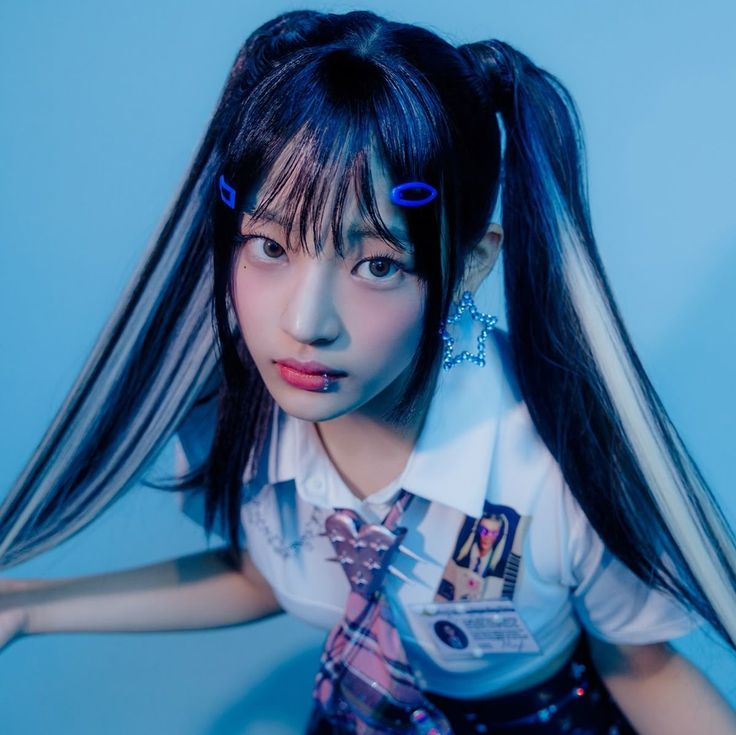
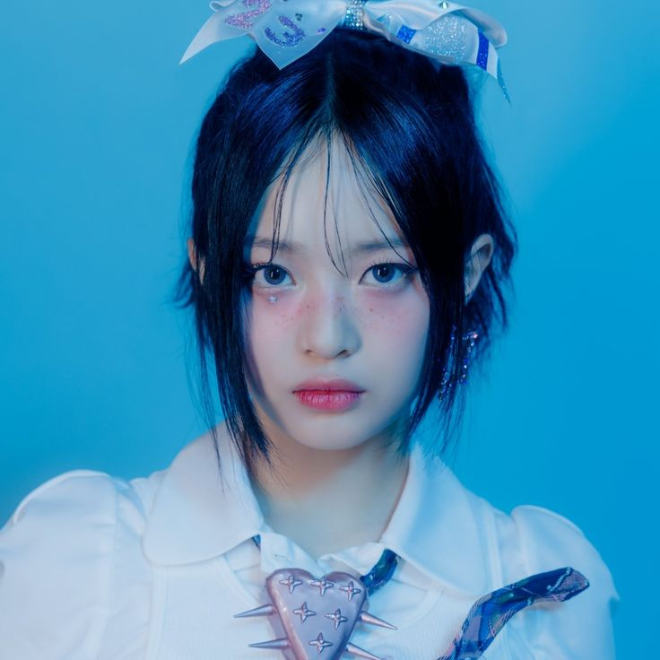
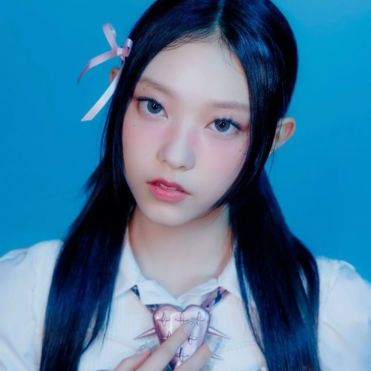
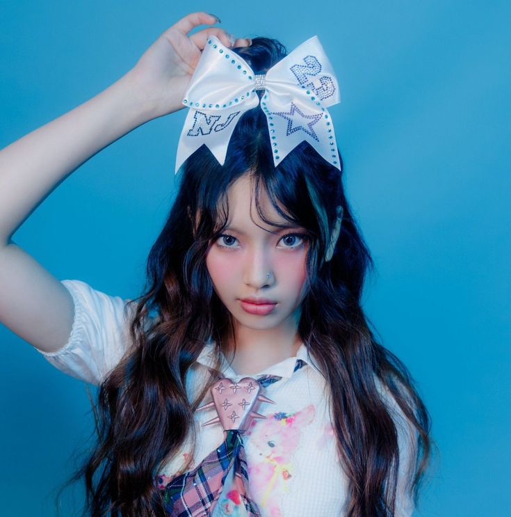
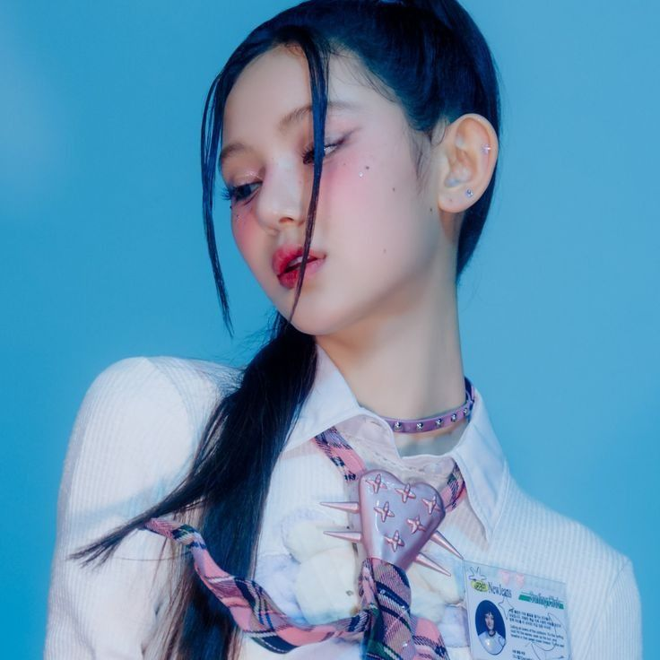

🧸 Stage Name: Minji (민지)
👤 Birth Name: Kim Minji (김민지)
🎤 Position: Rapper
🎂 Birthday: May 7, 2004
♉ Zodiac Sign: Taurus
🐒 Chinese Zodiac Sign: Monkey
📏 Height: 169 cm (5'6.5")
⚖️ Weight: N/A
🩸 Blood Type: A
🧠 MBTI Type: ESTJ (previously ISFJ, ENTJ)
🇰🇷 Nationality: Korean
💙 Representative Color: Blue
💛 Bunny Color: Yellow
🐻 Representative Emoji: 🧸 / 🐻
🏡 She was born in Chuncheon, Gangwon, South Korea.
👦👧 She has an older brother (born in 2003) and a younger sister (born in 2011).
🎶 She is a former Source Music trainee.
🧸 Her nickname is Teddy Bear, and her favorite nickname is Gomaji (bear-puppy).
👑 Although NewJeans does not have an official leader, Minji is often considered the group's leader.
🧠 Despite receiving different MBTI results over time, Minji believes ESTJ describes her best.
🐰🐶🦋🐻 Her favorite animals are rabbits, puppies, butterflies, and bears.
🍁 She spent a short period of time in Canada studying English.
📚🚶♀️🎬📝 Her hobbies include reading mystery novels, taking walks, watching movies, and decorating her diary.
🎤 She served as a Special MC for Music Bank in January 2023.

🦦 Stage Name: Hanni (하니)
👤 Birth Name: Hanni Pham
🇻🇳 Vietnamese Name: Phạm Ngọc Hân
🎤 Position: Vocalist
🎂 Birthday: October 6, 2004
♎ Zodiac Sign: Libra
🐒 Chinese Zodiac Sign: Monkey
📏 Height: 162 cm (5'4")
⚖️ Weight: N/A
🩸 Blood Type: O
🧠 MBTI Type: INFP
🇦🇺 Nationality: Vietnamese-Australian
Representative Color: Pink
🐰 Bunny Color: Pink
🦦 Representative Emoji: 🦦 / 🐰
🏡 She was born in Melbourne, Victoria, Australia.
👧 She has a younger sister named Jasmine (born in 2007).
🗣️ She can speak Vietnamese, English, and Korean.
🎶 She was a fan of One Direction when she was younger.
🎸 Hanni plays the ukulele.
✨ Her charming point is her short hair.
🦭 Her favorite emoji is a seal.
🌙🚶♀️ She likes going for walks at night because of the cool atmosphere and temperature.
🎨 Her favorite colors are grey and mint.

🐱 Stage Name: Haerin (해린)
👤 Birth Name: Kang Haerin (강해린)
🇬🇧 English Name: Vanessa Kang
🎤 Position: N/A
🎂 Birthday: May 15, 2006
♉ Zodiac Sign: Taurus
🐕 Chinese Zodiac Sign: Dog
📏 Height: 164.5 cm (5'5")
⚖️ Weight: N/A
🩸 Blood Type: B
🧠 MBTI Type: INTP (previously INTJ, ISTP)
🇰🇷 Nationality: Korean
💚 Representative Color: Green
🐰 Bunny Color: White
🐱 Representative Emoji: 🐱
🏡 She was born in Dongjak-gu, Seoul, South Korea.
👧 She has a younger sister (born in 2009).
🗣️ She can speak English and Korean.
🐱 Her nickname is Kitty Kang.
🧠 She is a very curious person and enjoys learning new things.
🤍 Her personality is quiet and kind, and she likes to think carefully before answering.
✨ She described herself as having the most mysterious charm in NewJeans.
🐈 She thinks the animal she resembles most is a cat.
🎧 Her specialty is finding and listening to music.
🎲 Haerin thinks she is very unpredictable.
☀️ She chose the sun emoji to represent herself because "hae" from Haerin means sun.
📚🎵 Her hobbies are listening to music and reading.

🐹 Stage Name: Hyein (혜인)
👤 Birth Name: Lee Hyein (이혜인)
🇬🇧 English Name: Grace Lee
👶 Position: Maknae
🎂 Birthday: April 21, 2008
♉ Zodiac Sign: Taurus
🐀 Chinese Zodiac Sign: Rat
📏 Height: 170 cm (5'7")
⚖️ Weight: N/A
🩸 Blood Type: O
🧠 MBTI Type: ISFP (previously INFP, ENFP)
🇰🇷 Nationality: Korean
💜 Representative Color: Purple
Bunny Color: Cyan Blue
🐹 Representative Emoji: 🐹 / 🐣
🏡 She was born in Incheon, South Korea.
👧👦 She has an older sister (born in 2003) and an older brother (born in 2005).
🗣️ She can speak Korean and English.
🚶♀️📸☁️🎬 Her hobbies include taking walks, taking photos of the sky and members, and looking up movies.
🍓 Her favorite fruit is strawberry.
👀🧹 She has a habit of observing people closely and cleaning before schedules.
🐶 She loves puppies, especially retrievers and bichons.
🚰 Her nickname is "Faucet" because she cries easily and is very emotional.
💜🤍 Her favorite colors are lavender and white.
🎶 She is a huge fan of TXT and BTS, especially Yeonjun and Jin.
✨ Before debut, ADOR's CEO described her as cool, sophisticated, talented, and having a deep yet innocent appearance.
🌞 She has a very charming, bright, and cheerful personality.

🐶 Stage Name: Danielle (다니엘)
👤 Birth Name: Danielle Marsh
🇰🇷 Korean Name: Mo Jihye (모지혜)
🎤 Position: N/A
🎂 Birthday: April 11, 2005
♈ Zodiac Sign: Aries
🐓 Chinese Zodiac Sign: Rooster
📏 Height: 165 cm (5'5")
⚖️ Weight: N/A
🩸 Blood Type: AB
🧠 MBTI Type: ENFP (previously ENFJ)
🇦🇺 Nationality: Korean-Australian
💛 Representative Color: Yellow
🐰 Bunny Color: Green
🐶 Representative Emoji: 🐶
🏡 She was born in Newcastle, New South Wales, Australia.
👨🇦🇺👩🇰🇷 Her father is Australian and her mother is Korean.
👧 She has an older sister named Gyuna/Olivia (born in 2000).
🗣️ She can speak English and Korean.
🎶 She trained at YG Entertainment during middle school and later joined Source Music in early 2020.
🏄♀️ She wants to start a surfing club with Hanni because she loves surfing.
🌻 Her representative hashtag is #Sunflower because she is considered the sunflower of the group.
🎬👑 She is often called the Disney icon, Netflix icon, and teen icon because of her visuals.
🎨🎵🏊♀️💬 Her hobbies include drawing, painting, listening to music, swimming, and talking with the members.
☀️ She is known as the "Vitamin D" of NewJeans.
🤗🎼✏️ Her specialties are hugging, composing, and drawing.
Danielle is known for her good reactions and optimistic personality.